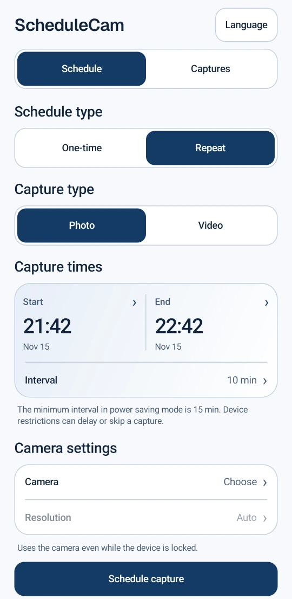

一定間隔で 写真を自動撮影
例えば8時から12時まで、植物を30分おきに定点撮影。開始・終了日時と間隔を設定して、それぞれの写真を時刻順に比較できます。
Android 14以降
同じ場所から決まった間隔で写真を撮る、指定した時刻に動画を録画する。スマホを固定し、必要な時間だけ撮影したいときに使えます。
設定方法を見る ↓
例えば8時から12時まで、植物を30分おきに定点撮影。開始・終了日時と間隔を設定して、それぞれの写真を時刻順に比較できます。
例えばペットの昼と夕方の様子を、それぞれ2分ずつ録画。単発を選べば間隔が不均等な場合でも、最大30件の日時を分単位で指定できます。
スタンドなどでスマホを固定し、撮りたい範囲が入るようにカメラと向きを決めます。
繰り返しは開始・終了日時と間隔を設定し、単発は必要な日時を追加します。同じ予約内では撮影の種類と設定が共通です。
待機を確認したらスマホを置いたままにできます。撮影後は「撮影結果」で確認し、「コピーを保存」で取り出せます。
写真は1分から指定できます。AndroidのバッテリーセーバーやDozeの作動中は、15分未満に設定しても間隔を15分に調整します。端末や電源設定により、撮影が遅れたり見送られたりする場合があります。
インターバル撮影では、写真はJPEG、動画の繰り返し撮影では動画はMP4として、1回ずつ保存します。早送りのタイムラプス動画にしたいときは、撮影した写真を編集アプリでつなぎ合わせてください。
1回あたり1〜10分を設定できます。繰り返しの場合は録画時間より長い間隔を設定してください。終了日時までに録画が収まらない回は開始しません。
端末内だけに保存する予約撮影はオフラインで利用できます。Google Driveに自動保存する場合は、事前にDriveを連携しておくと、接続が戻ったときに保留中の転送を再試行します。